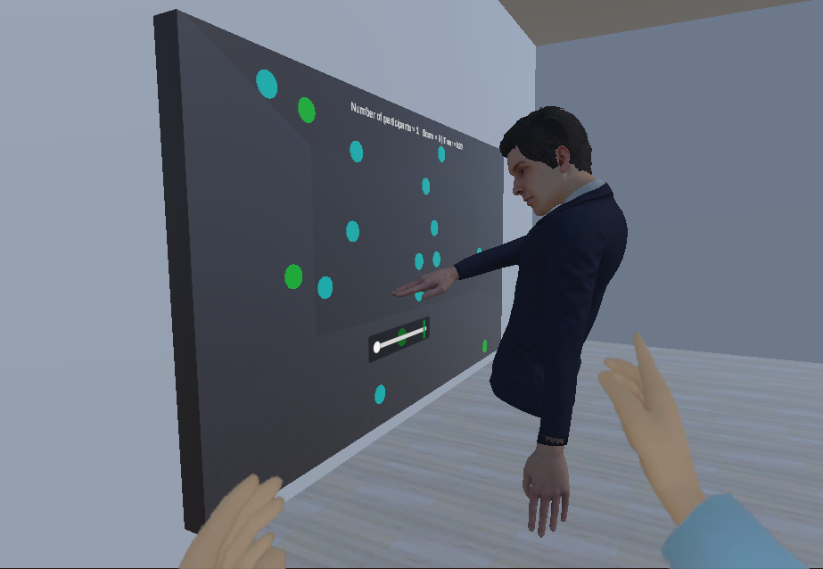

Mes expériences professionnelles

Stage recherche en VR
IMT Atlantique - février à juillet 2024 (6 mois)
Création d'un système de collaboration entre des utilisateurs co-localisés devant un grand écran tactile et des utilisateurs distants équipés de casques VR.

Stage développeur web
Maison Cadiou - avril à juin 2021 (2 mois)
Refonte du site web principal de l'entreprise à l'aide de HTML, CSS, JavaScript et WordPress. Stage réalisé dans le cadre de mon DUT informatique. Le site a été publié ici.